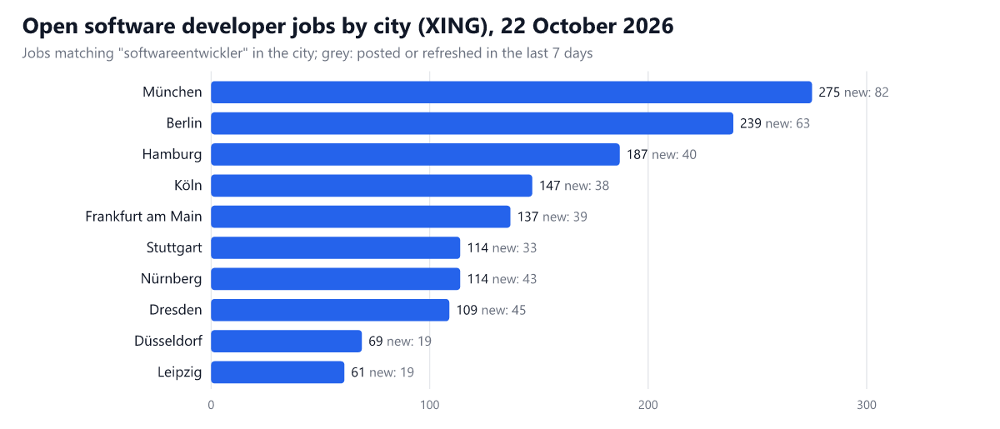
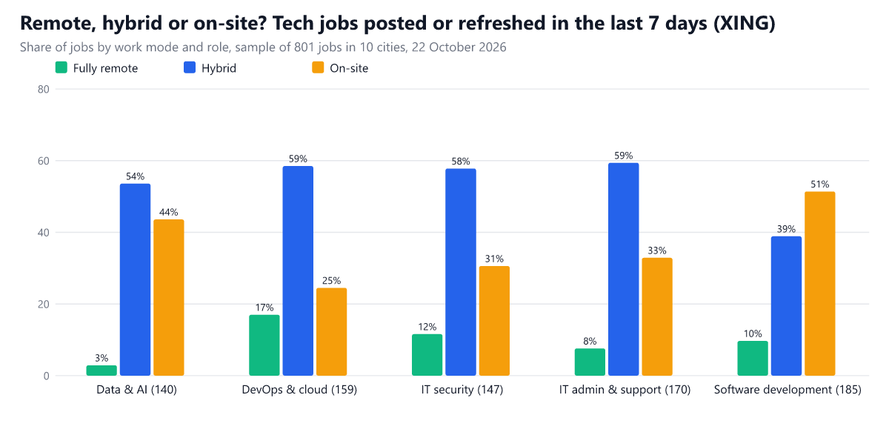

Data reports / Tech jobs in Germany
Where are the tech jobs in Germany? Jobs by city, remote share and salaries (22 October 2026)
Disclosure: I built the Apify Actors used to collect this data. This post was written with AI assistance.
München leads the German tech job market this week with 275 open software developer jobs on XING, ahead of Berlin (239). Across the ten biggest job cities, 421 of 1,452 software developer jobs were posted or refreshed in the last seven days. Of the newly posted or refreshed tech jobs in my sample, 9.9% are fully remote and 53.2% hybrid; only 35.3% show a salary published by the employer, and 54.3% carry only an estimate computed by XING.
If you are hunting for a developer, data or DevOps job in Germany, or benchmarking your own hiring, "which city, how much, how remote" is spread across thousands of ads. This report counts them from two job boards with the same searches every time, so changes between editions are real changes.
Software developer jobs by city

| City | Software developer jobs open | Posted or refreshed in last 7 days | Data engineer jobs open | DevOps jobs open | Hybrid or remote share (new jobs) | Salary published by employer | Change in open software jobs |
|---|---|---|---|---|---|---|---|
| München | 275 | 82 | 113 | 151 | 51.6% | 43% | – |
| Berlin | 239 | 63 | 150 | 205 | 63.8% | 21.3% | – |
| Hamburg | 187 | 40 | 80 | 145 | 65.2% | 37.1% | – |
| Köln | 147 | 38 | 76 | 102 | 59.7% | 39.1% | – |
| Frankfurt am Main | 137 | 39 | 70 | 130 | 77.5% | 40.4% | – |
| Stuttgart | 114 | 33 | 38 | 73 | 73% | 43.2% | – |
| Nürnberg | 114 | 43 | 16 | 59 | 69.3% | 37.3% | – |
| Dresden | 109 | 45 | 22 | 60 | 46.8% | 17.2% | – |
| Düsseldorf | 69 | 19 | 31 | 66 | 59.5% | 39.3% | – |
| Leipzig | 61 | 19 | 6 | 46 | 61.6% | 30.8% | – |
Each role column counts the jobs XING returns for that keyword in that city, so a job can appear in more than one role. Shares come from a sample of up to 20 new jobs per search; cities with fewer than 10 sampled jobs show n/a. The last column compares with the previous edition (this is the first edition, shown as a dash).
By role
| Role (search keyword) | Open jobs in the 10 cities | Posted or refreshed in last 7 days | Fully remote / hybrid (new jobs) | Salary published | Median published salary (per year) |
|---|---|---|---|---|---|
| Data & AI ("data engineer") | 602 | 203 | 2.9% / 53.6% | 17.1% | €77,500 |
| DevOps & cloud ("devops") | 1,037 | 382 | 17% / 58.5% | 55.3% | €80,000 |
| IT security ("it-sicherheit") | 1,038 | 343 | 11.6% / 57.8% | 39.5% | €90,000 |
| IT admin & support ("it-administrator") | 1,482 | 438 | 7.6% / 59.4% | 40.6% | €62,500 |
| Software development ("softwareentwickler") | 1,452 | 421 | 9.7% / 38.9% | 23.8% | €70,000 |

On XING, "published" means the employer stated a salary in the ad; for most ads XING shows its own estimate instead, which I count separately and do not treat as a salary disclosure. The median uses published salaries with a yearly range between €20,000 and €300,000.
The second source: stellenanzeigen.de, the complete list
stellenanzeigen.de is a smaller board with fewer tech ads, which means I can read all of them. This week it listed 580 distinct tech jobs across 27 tech keywords, 177 of them posted in the last seven days. Home office is possible or full in 56.7% of them (1.2% fully remote), and 13.6% state a salary, with a median advertised yearly salary of €67,500 (61 ads with a yearly range).
| Role | Jobs | Posted in last 7 days | Home office possible or full | Salary stated | Median salary (per year) |
|---|---|---|---|---|---|
| Data & AI | 144 | 34 | 48.6% | 9% | €80,000 |
| DevOps & cloud | 50 | 7 | 22% | 6% | €75,000 |
| IT security | 55 | 23 | 65.5% | 16.4% | €70,000 |
| SAP & ERP | 82 | 11 | 92.7% | 8.5% | €80,000 |
| IT admin & support | 117 | 54 | 47.9% | 18.8% | €56,770 |
| Software development | 132 | 48 | 60.6% | 18.9% | €65,000 |
Most common workplaces on stellenanzeigen.de (a job with several workplaces counts for each city):
| City | Jobs | Share of tech jobs |
|---|---|---|
| Hamburg | 35 | 6% |
| Frankfurt am Main | 25 | 4.3% |
| Dortmund | 24 | 4.1% |
| Berlin | 22 | 3.8% |
| Köln | 19 | 3.3% |
| München | 19 | 3.3% |
| Düsseldorf | 14 | 2.4% |
| Finsterwalde | 13 | 2.2% |
| Stuttgart | 12 | 2.1% |
| Karlsruhe | 12 | 2.1% |
How this was measured
- Sources: the XING Jobs Scraper and the stellenanzeigen.de Scraper on Apify, run on 2026-10-22 with fixed inputs: 5 role keywords ("data engineer", "devops", "it-sicherheit", "it-administrator", "softwareentwickler") in ten cities (Berlin, München, Hamburg, Frankfurt am Main, Köln, Stuttgart, Düsseldorf, Leipzig, Dresden, Nürnberg) on XING; 27 tech keywords across all of Germany on stellenanzeigen.de.
- Counts: the open-job and new-job numbers on XING are the totals XING reports for each search at run time. The stellenanzeigen.de figures are counted from the complete list.
- Samples: work mode and salary shares for XING come from up to 20 jobs per search posted or refreshed in the last 7 days (XING's own date filter) (801 distinct jobs in total), so read them as estimates of the new-job mix, not of every open ad.
- What the keywords catch: a keyword search matches ads that mention the term, so some matches are only loosely related. The same searches run every week, which keeps editions comparable.
- Aggregates only: no job titles, ad texts, company names or contact details are used or published here.
How to get this data yourself, every day
Everything above was collected by these Apify Actors from a fixed input, plus some arithmetic. You can run the same collection on your own Apify account in a couple of clicks:
- XING Jobs Scraper: $0.80 per 1,000 results on the free plan, you pay only for results delivered.
- stellenanzeigen.de Scraper: $1.20 per 1,000 results on the free plan, you pay only for results delivered.
Collecting the data for this edition costs about $1.92 on Apify's free plan (you pay per result delivered, nothing for a search that returns nothing), so a weekly refresh is about $8 a month.
Daily monitor in three steps:
- Open the Actor, paste an input like the one below, and switch on Only new (
onlyNew). The first run returns everything; every later run returns only what no earlier run of the same watch list delivered, and skipped items are not charged. - Save the input as a task and put it on a schedule (for example the cron expression
0 7 * * *, every day at 07:00 UTC). - Send the result where you work: e-mail, Slack or Google Sheets, from the task's Integrations tab.
{
"keywords": [
"softwareentwickler"
],
"locations": [
"Berlin"
],
"maxListingsPerSearch": 100,
"onlyNew": true,
"monitorKey": "softwareentwickler-berlin"
}
This input is for the stellenanzeigen.de Scraper, which has the only-new switch (onlyNew plus a monitorKey that names your watch list). On the XING scraper, use Posted within (postedWithinDays: 1 or 7) with a daily schedule to get the same effect.
Want your own cut: your stack, your city, your salary band? Run the XING Jobs Scraper or the stellenanzeigen.de Scraper on Apify, type your keywords and towns, and get every job with its salary, work mode and posting date as a spreadsheet. The input forms are prefilled and the first run takes a minute.
Next edition: this report is rebuilt weekly with the same method, so changes between editions are real changes. Bookmark the latest edition or the reports hub, or run the monitor above if you would rather have new items delivered automatically.
All editions
- 22 October 2026 (latest)